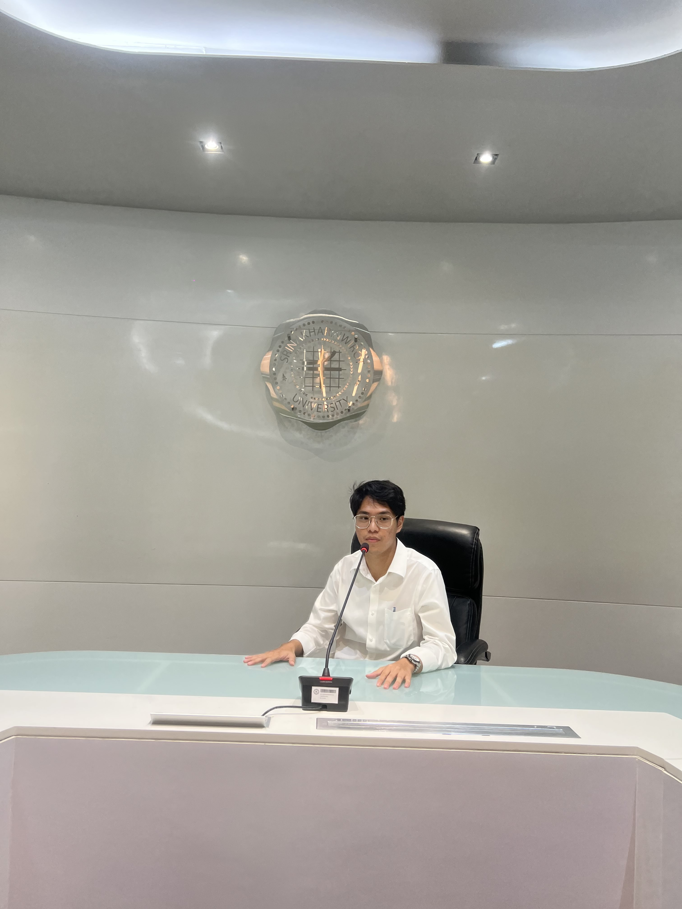

üõ† My Projects

ü뮂Äçüíª About Me
Hello, my name is Kijnaphat Suksod, a passionate geographer and geoinformatics specialist with a vision to bridge data, landscapes, and decision-making in ways that transform our understanding of the world. With a solid academic foundation and an unshakable curiosity for how space, place, and data interact, I have developed a deep expertise in spatial analysis, remote sensing, GIS modeling, and data-driven environmental planning. Whether working with satellite imagery, UAV data, or multi-dimensional geographic information systems, I am driven by one purpose: to uncover the unseen patterns of the Earth and turn them into actionable insights. I believe that geography is more than just maps—it's the key to solving real-world problems. My work combines advanced geospatial technologies with strategic thinking to support urban development, disaster resilience, and sustainable resource management. In every project, I strive to bring clarity to complexity and reveal the stories hidden within coordinates. I don’t just map the world—I help people make smarter decisions within it.